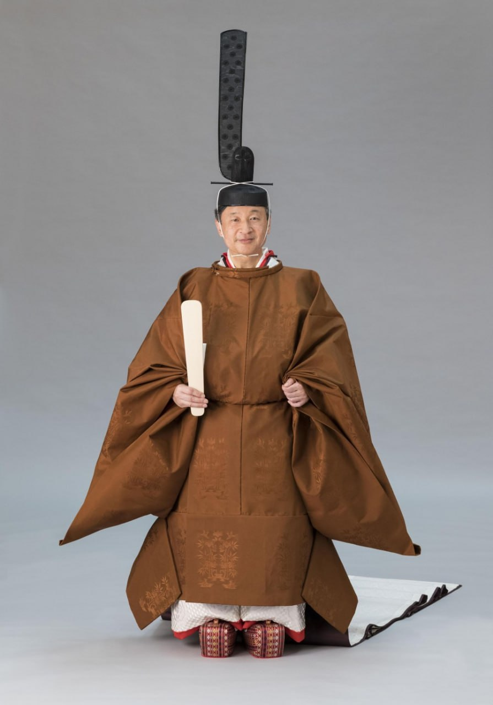

Государственный строй в Японии
Япония — унитарное демократическое национальное государство, парламентская конституционная монархия.
Носителем государственного суверенитета является японский народ.
Власть разделяется на
три ветви — законодательную, исполнительную и судебную. Первая представлена двухпалатным
парламентом, вторая — Кабинетом министров и органами исполнительной власти на местах,
третья — Верховным и региональными судами. Муниципалитеты различных уровней имеют широкие
права самоуправления.
Высшим органом власти является Парламент.
Формальный глава государства — Император Японии; фактический — премьер-министр, руководитель Кабинета министров.
Традиционное летоисчесление
В Японии используется как западный (西暦) так и японский (年号) календари. В японском традиционном календаре летоисчисление отсчитывается от начала года правления императора.
Так, в 2019 году, на трон взошел новый император Нарухито. В его честь была названа новая эра Рейва. Она считатется 248-й по счету.
Рис.1 Император Нарухито
Интересный факт
В Японии существовали так называемые "запретные" цвета. К ним относится и Сумаховый цвет (яп. 黄櫨染 ко:родзэн), который использовался только для верхней одежды Императора Японии. Он был запрещён для применения кем угодно, кроме японского монарха. По сегодняшний день церемониальная японская одежда императора во время интронации красится только в этот сумаховый цвет. Его добывают из плодов сумаха (Rhus succedanea) — японское восковое дерево.
_